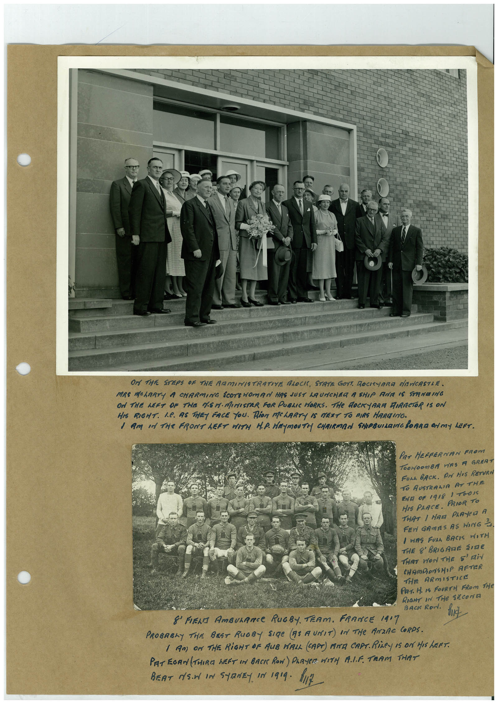

Book 1 · scan 050


Description
Transcription
Context
Review notes
Compare the machine draft with the scan. Handwriting and names need human review.
Artifacts
Edit the artifacts field in this note’s frontmatter to change these records. This summary is generated.
B01-S050-A01 — Photo & Handwritten note — Book 1, scan 050
Types: Photo, Handwritten note
Scope: Whole scanned page; individual items can be split out during review.
Caption: Not mapped yet.
Caption source: Not recorded yet.
Caption status: unmapped
Machine transcription
Or THE STEPS OF THE ARMINISTRATIVE BLOCK, STRTE GOYT, ROCKYARa NEWCASTLE. MRS MOLARTY A CHARMING SCOTEHOMAN HAS JUST ARUNCHER A SHIP ROE IS STRATING ON THE LEFT OF THE NSM. MINISTAR FOR PUBLIC HORKS. THe ROCKYARA DIRECTOR IS ON HIS RIGHT. L.C. AS THEY FACE YOU. RiOR MCLARTY IS MEXT TO DIRS HARDING. I AM IN THe FRONT LET WITH H.P. HEMOUTH CHAIRMAN SHIPBUILDING BORAM ON MY LEFT. PAT HEFFERNAN FROM TOONOOnBA HAS A GRERT FULL BACK. AM HIS RETURN TO AUSTRALIA AT THE END OF 1918 1 TOIS HIS PRACE. PRIOR TO THAT / HAEI PRAYeR A FEr GAmES AS HING 3 / WAS FURA BASIS MOTH THE 8' BRIGARE SURE THAT WON THE SAIN CHAMDONSHIP AFTER THE ARMISTICE Par. H. Is FOURTH FRom THe RIGHT IN THE SECOND 8' FIERA AMBULANCe RUGBY. TEAM. FRANCE 1417 BACK RoN. fric PROBABLY THE BRET RUGBY SIRe (AS A UNIT) IN THe ANZAC CORPS. ( AM) OM THE RiGHT OF AUB VALL (CAPT) ANA CAPT. RiLeY 15 ON HIS LEFT. PAT EGAN (THIRE hEFT IN BACK RON) PLAYER WITH ALF. TRAM THAT BEAT NS.N IN STRNEY IN 1919. 1117